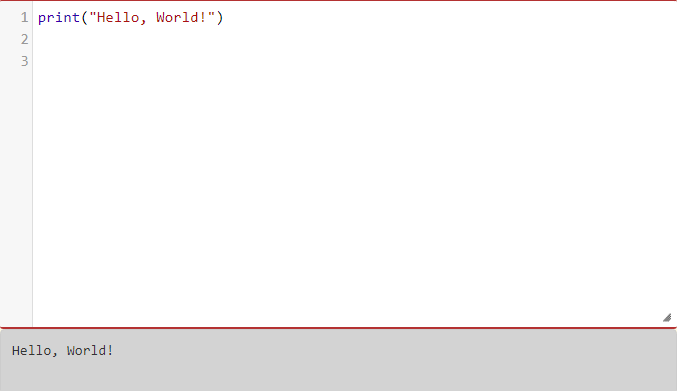

Python был признан языком программирования номер один по индексу PYPL в 2021 году в основном по двум причинам. Он очень удобен для новичков, что делает его одним из самых доступных и простых для изучения языков. В связи с этим приходит вторая причина, ее изучает весь мир. Из-за большого количества студентов и разработчиков Python предлагает большинство бесплатных онлайн-руководств. Сообщество огромно и активно, что позволяет любому найти помощь и руководство через форумы. Доступность поддержки через форумы укрепляет уверенность новичка в изучении Python, поскольку он или она не тратят много времени на поиск наиболее эффективного решения.
Из-за некоторых элементов кода на Pascal, он невероятно быстр и оптимизирован, когда дело доходит до его компиляции. Кроме того, можно легко объединить код Pascal в один файл .exe. Это преимущество Паскаля может показаться не слишком привлекательным для начинающего разработчика, но любой, у кого есть приличный опыт разработки, поймет, насколько ценно это преимущество.
В наших школах в основном преподаётся язык программирования Pascal, этот я язык вышел в 2000-х тысячных годах, а в данный момент уже 2022 год и современно ИТ общество входит в эпоху нейронных сетей и близиться день создания искусственного интеллекта, но мы всё ещё в школах изучаем язык программирования устаревший на 22 года. Его достаточно для общих понятий о программировании и школа не готовит профильных специалистов в области ИТ, но не отменяет тот факт что знания в школах должны совершенствоваться и поспевать за эпохой. Возможно в других областях такое совершенствование и идёт, но не в области информатики. И это является серьёзной проблемой. Цель этой работы это создание сайта для обучения языку Python и сравнение Python и Pascal между собой.
Хоть и Pascal имеет много преимуществ это не отменяет тот факт что излишне сложный и не обновлялся с момента создания. Он хорошо подходит для баз данных. Python хорошо подходит для нейросетей. У Python несколько другая структура кода, а именно точнее нет разделов объявления переменных констант и меток, но согласно Quartz, средний разработчик Python имеет зарплату в размере 100 000 долларов, и это один из самых востребованных языков, поскольку на него полагаются многие крупные корпорации, например Google. Кроме того, учитывая ранее упомянутое преимущество, а именно простоту изучения, это действительно создает мотивацию к изучению языка и радует тем что легко найти работу. Это главный положительный аргумент для Python.
Python был признан языком программирования номер один по индексу PYPL в 2021 году в основном по двум причинам. Он очень удобен для новичков, что делает его одним из самых доступных и простых для изучения языков. В связи с этим приходит вторая причина, ее изучает весь мир. Из-за большого количества студентов и разработчиков Python предлагает большинство бесплатных онлайн-руководств. Сообщество огромно и активно, что позволяет любому найти помощь и руководство через форумы. Доступность поддержки через форумы укрепляет уверенность новичка в изучении Python, поскольку он или она не тратят много времени на поиск наиболее эффективного решения.
Из-за некоторых элементов кода на Pascal, он невероятно быстр и оптимизирован, когда дело доходит до его компиляции. Кроме того, можно легко объединить код Pascal в один файл .exe. Это преимущество Паскаля может показаться не слишком привлекательным для начинающего разработчика, но любой, у кого есть приличный опыт разработки, поймет, насколько ценно это преимущество.
В наших школах в основном преподаётся язык программирования Pascal, этот я язык вышел в 2000-х тысячных годах, а в данный момент уже 2022 год и современно ИТ общество входит в эпоху нейронных сетей и близиться день создания искусственного интеллекта, но мы всё ещё в школах изучаем язык программирования устаревший на 22 года. Его достаточно для общих понятий о программировании и школа не готовит профильных специалистов в области ИТ, но не отменяет тот факт что знания в школах должны совершенствоваться и поспевать за эпохой. Возможно в других областях такое совершенствование и идёт, но не в области информатики. И это является серьёзной проблемой. Цель этой работы это создание сайта для обучения языку Python и сравнение Python и Pascal между собой.
Хоть и Pascal имеет много преимуществ это не отменяет тот факт что излишне сложный и не обновлялся с момента создания. Он хорошо подходит для баз данных. Python хорошо подходит для нейросетей. У Python несколько другая структура кода, а именно точнее нет разделов объявления переменных констант и меток, но согласно Quartz, средний разработчик Python имеет зарплату в размере 100 000 долларов, и это один из самых востребованных языков, поскольку на него полагаются многие крупные корпорации, например Google. Кроме того, учитывая ранее упомянутое преимущество, а именно простоту изучения, это действительно создает мотивацию к изучению языка и радует тем что легко найти работу. Это главный положительный аргумент для Python.
Почти все в отрасли знают или даже используют Python, однако Паскаль все еще существует, и на то есть веские причины. Более того, большинство новых, молодых разработчиков не имеют твердого и правильного представления о Паскале. В частности, что представляет собой язык и почему некоторые разработчики могут его выбрать.
Несмотря на то, что Паскаль не очень популярен, он, вероятно, больше всего подходит для создания графического интерфейса и работы с ним. Вы можете эффективно использовать его в IDE, например в Delphi. Delphi упрощает и предоставляет разработчику множество способов управления графическим интерфейсом. Это преимущество Паскаля еще более актуально, учитывая текущую тенденцию в отрасли. В настоящее время пользовательский интерфейс является одним из важнейших факторов, определяющих успех приложения или программного обеспечения. Тем не менее, стоит упомянуть, что даже несмотря на то, что у Паскаля есть инструменты, вам все равно нужно их изучить. Как и с чем-либо, без знаний и практического опыта невозможно достичь хорошего уровня производительности.
Значение - это одна из фундаментальных вещей, таких как слово или число, которыми программа управляет. До сих пор мы видели значения 5 (результат сложения 2 + 3) и «Hello, World!». Мы часто называем эти значения объектами и будем использовать слова значение и объект как синонимы. Эти объекты подразделяются на разные классы или типы данных: 4 - целое число, а «Hello, World!» представляет собой строку, так называемую, потому что она содержит строку или последовательность букв. Вы (и интерпретатор) можете идентифицировать строки, потому что они заключены в кавычки. Возможно, вы использовали обозначение функций в математическом классе, например y = f (x), вероятно, только для функций, которые действуют на одно числовое значение и производят одно числовое значение. Python не имеет таких ограничений: входы и выходы могут быть любого типа.
В оболочке Python нет необходимости использовать функцию печати, чтобы увидеть значения, показанные выше. Оболочка оценивает функцию Python и автоматически распечатывает результат. Например, рассмотрим сеанс оболочки, показанный ниже. Когда мы просим оболочку оценить тип («Hello, World!»), Она отвечает соответствующим ответом, а затем отображает подсказку для следующего использования. Обратите внимание, что в последнем примере мы просто просим оболочку оценить строку «Hello, World». Результат, как и следовало ожидать, - это сама строка.